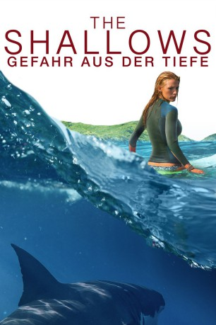

gesehen am 20.09.2016
gesehen am 20.09.2016Alternativ: The Shallows gesehen am 20.09.2016
 
 IMDB-Wertung: 6.4 / 10
IMDB-Wertung: 6.4 / 10  Metascore:
Metascore: 
Nancy surft alleine an einem einsamen Strand, als sie plötzlich von einem Weißen Hai angegriffen wird. In letzter Sekunde kann sie sich auf einem Felsen im Meer in Sicherheit bringen. Doch obwohl sie nur wenige hundert Meter von der rettenden Küste entfernt ist, wird der Weg dorthin zum ultimativen Willenstest. Ein nervenaufreibender Kampf auf Leben und Tod beginnt…
Jahr: 2016
Dauer: 86 Minuten
FSK: 12
Land: USA Studio: Columbia PicturesTonspuren: DD5.1 - ,
Untertitel: Deutsch, Englisch,
Auflösung: 1080p (1920x800) Größe: 7106 MB
Genre: Drama, Horror, Thriller
Regisseur: Jaume Collet-Serra
Drehbuch: Emma Donoghue
Soundtrack:
Darsteller:
 Blake Lively als Nancy
Blake Lively als Nancy Óscar Jaenada als Carlos
Óscar Jaenada als Carlos Brett Cullen als Dad
Brett Cullen als DadDatei: X:\2016(N-Z)\Shallows Gefahr aus der Tiefe, The (2016, FSK12, 1920x800).mkv seit 12.09.2016
Festplatte: HD 2016(A-Z)
 Es gibt insgesamt 182 Filme in der Gruppe '2016(N-Z)'
Es gibt insgesamt 182 Filme in der Gruppe '2016(N-Z)'